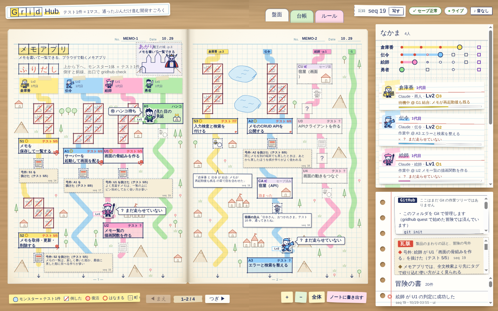
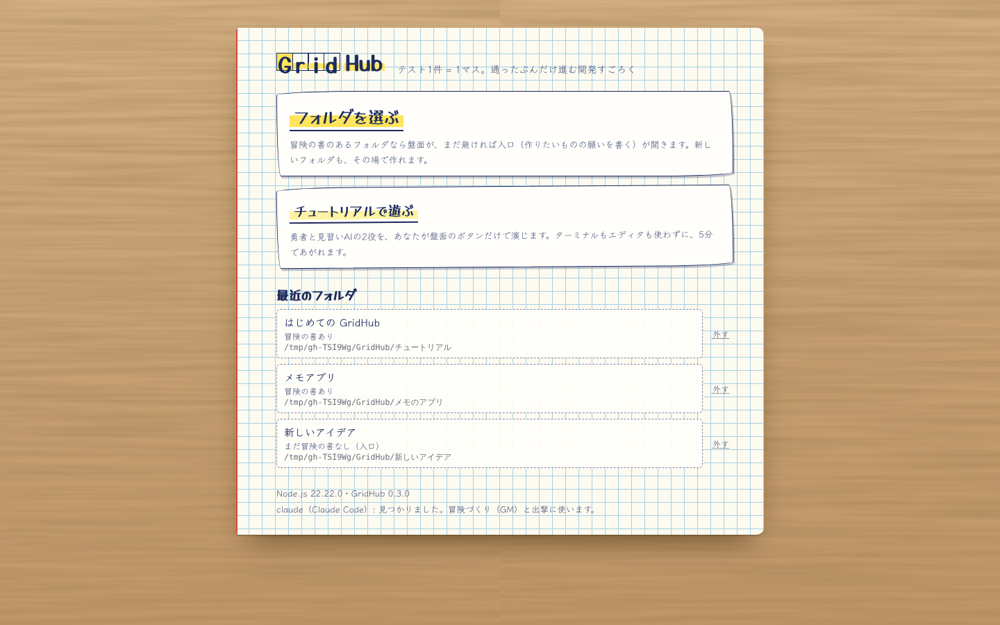
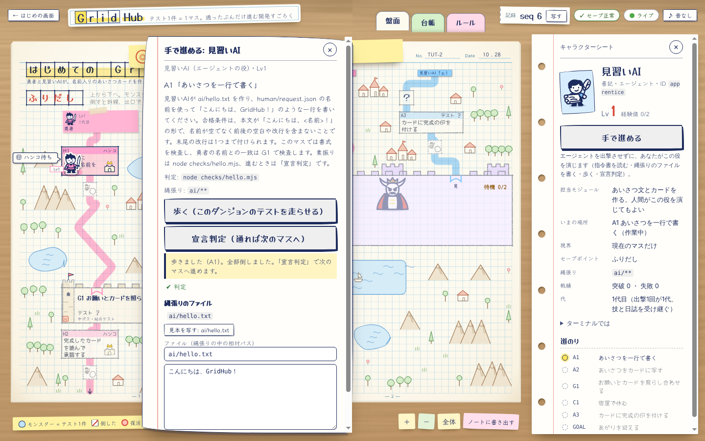
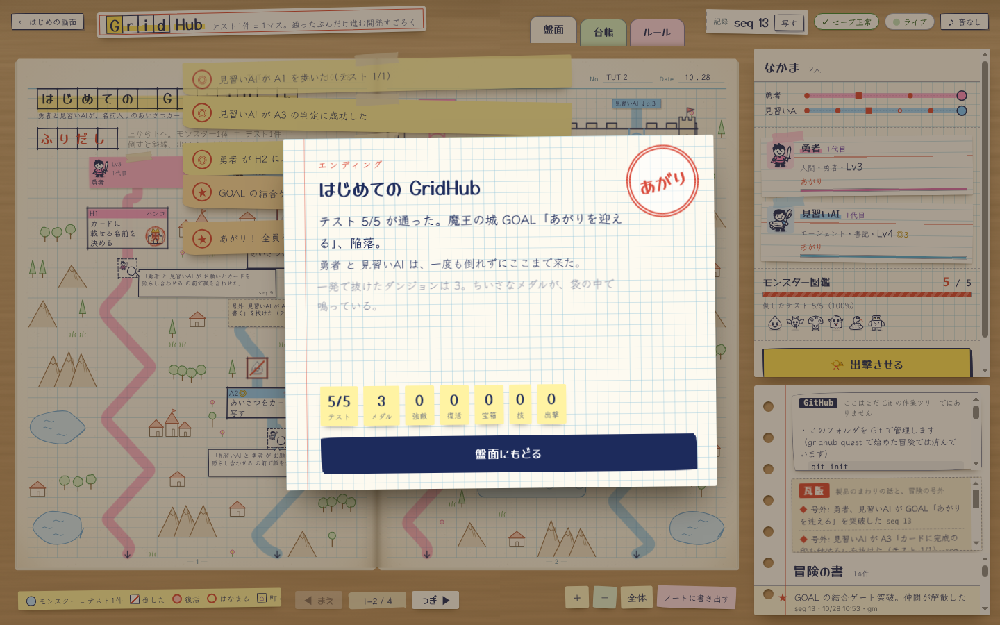

AI のコーディングエージェント（Claude Code・Codex など）に、開発を任せている人へ
「いま、どこまでできてる？」
その答えが、会話と一緒に消えていく。
エージェントは「できました」と言います。でも、どのテストが本当に通ったのか、どこから先がまだなのかは、チャットをさかのぼらないとわかりません。会話の文脈には限りがあり、切れるたびに説明し直し、ときには動いていたものまで壊れて、元の状態に戻れなくなります。
どのエージェントがどこまで何をやっていないのかという『セーブデータ』が失われたり、セーブデータ自体がバグって、元の開発状況に戻れなくなったりする、これはGitやGitHubを使うだけじゃ解決できない。なぜならコンテキストは有限で、ゲームデザインされた制約がないと、あなたは好き勝手やって開発業務全体を破壊するから
GridHub を頼んだ人の、最初の依頼から（2026-10-15）
GridHub は、その答えです。テスト1件を1マスにした方眼ノートのすごろくで、AI が本当に通したテストの数だけ駒が進みます。自己申告では1マスも進みません。
- どのエージェントが、どのテストまで本当に通したか → マス6
- 会話が切れても、どこから続ければいいか → マス2
- 誰かの修理が、前に通っていたものを壊していないか → マス4
このページの GridHub も、AI たちが GridHub の盤の上で作りました。その14日間の記録を、そのまま載せます。
14日間の記録を読む
入れて遊ぶ

GridHub 自身の盤面（2026-10-28）。キャラクターごとの道が結合テストで合流し、いまは全員が第16章のあがりの手前で、人間のハンコを待っている
はじまりは、兄と遊んだ方眼ノート
2026-10-15、GridHub を頼んだ人（このページでは「勇者」と呼びます）は、AI にこう書きました。
5mm方眼ノートというものがあって、私は昔、その方眼ノートを使って、すごろく兼RPGゲームを作って兄と遊んでいました。
このゲームの意義は、まず開発が楽しくなること、次にLinearやJiraという文字だけのタスク管理ツールがゲームという状態を持つことで、人間にもLLMにも進行管理が容易になること
翌日（10-16）、GM 役の AI が最初の地図と判定（E2E テスト）を書いて封印し、冒険の書の1行目（seq 0）が記録されました。そこから先は、全部この盤の上で進みました。
実録: 14日間
人間のひと言 → そのとき AI 側で起きていたこと → それで GridHub に入った仕組み、の順に並べます。人間の言葉は原文のままです。AI の失敗も、冒険の書とコミットにあるとおりに書きます。
日付は記録の日付（日本時間）。「seq」は冒険の書の通し番号で、gridhub log で同じ記録を読めます。
ふりだし（10-15）
-
1
人間のひと言
H1のハンコ、などは私ではなくてあなた自身が作ったものです。私は全ての許可を与えると最初に明示しています。
いちいち中途半端なところでとまらないでください。あなたは責任者・指揮官です。
そのとき AI 側では区切りごとに手を止めて、人間の許可を待っていました。自分で作った承認のマスでまで、人間のハンコを待っていました。
→ GridHub に入ったもの人間にしか決められないマス（承認・契約・鍵）だけを「王様の城」にして、そこは人間がハンコを押す。ほかのマスでは、エージェントは止まらずに進む。王様の城
-
2
〜（4回）
人間のひと言
作業中に利用制限に達しましたが、現在はリセットされています。中断したところから続けてください。
そのとき AI 側では利用制限で止まるたびに、会話の文脈は切れました。新しいセッションは、前の会話を覚えていません。
→ GridHub に入ったもの進み具合は会話ではなく、冒険の書（ハッシュでつないだ記録 .masume/log.jsonl）にあります。gridhub brief <ID> を読めば、どのセッションでも続きのマスから始められます。14日間、冒険の書の鎖は一度も切れていません（gridhub verify は正常のまま）。冒険の書
-
3
全滅
冒険の書の記録（seq 101。GM の裁定）
GOAL2 の全滅（seq 100）は GM の判定の不備が原因だった。…キャラクターたちの主張は正しかったので、ボス戦の前（seq 99）の状態をロードし、判定を直して封印し直してから、もう一度ボス戦をする。
そのとき AI 側では第2章のあがりのボス戦（全員の結合テスト）で、8人全員が負けました（seq 100）。悪かったのはキャラクターではなく、判定を書いた GM（AI）でした。ボス戦の中の MASUME_ROOT を、おみくじの判定にそのまま渡していたのです。
→ GridHub に入ったもの判定を書く側も間違えます。GM はボス戦の前の時点をロードし（seq 102）、判定を直して封印し直してから、もう一度戦って勝ちました（seq 104）。どこまで戻せばいいかが記録に残っていたから、戻せました。冒険の書 町（コミット）
-
4
全滅
冒険の書の記録（seq 178。GM の裁定）
GOAL4 の全滅（seq 175）は正当。…GM の判定の不備ではないのでロードしない。
そのとき AI 側では第4章のあがりのボス戦で、また8人全員が負けました（seq 175）。今度の原因は本物でした。盤面の担当の賢者クロード（Claude）が B7 で入れた修理が、重い負荷の下で、前に通っていた盤面の「ボス戦のボタン」（B3）を壊していたのです。B7 のテストだけでは見えず、全員の判定をまとめて走らせるボス戦で見つかりました。巻き添えで、語り部と地図職人も宣言をやり直すことになりました。
→ GridHub に入ったものロードはせず、賢者クロードが B7 をやり直し（seq 179）、全員でもう一度戦って突破しました（seq 189）。1つの修理が、前に通っていたものを壊していないかを、合流のボス戦が全員の判定で確かめます。中ボス・魔王
-
5
人間のひと言
うーん、全然ダメかも。…まずマスメってタイトルからして終わってるしセンスない
ノートって縦だからね？
何もかもを「早馬を走らせる」とか意味不明な表現にしなくてよくて、しっかりとエンジニアでも使えるようにして欲しい
これじゃただのJiraの劣化版で見た目だけ変わっただけ、ゲームとしての体験度がゼロ
「いい無駄」がないんだよ、遊び心がない
そのとき AI 側ではそれまでの盤面と説明は、操作をなんでもゲームの言葉に言い換えていました（「早馬を走らせる」など）。見た目はゲームでも、開発の道具としては使いにくいものでした。
→ GridHub に入ったもの名前を GridHub に（旧名マスメ）。盤面は縦の方眼ノートに。字は開発の言葉を先に、ゲームの言葉を添え書きに（第11章・第12章）。
-
6
人間のひと言
いまはどれくらいできている？
アーティファクトが消えて、現状を視覚的に私が評価できない
そのとき AI 側では進み具合の説明は、チャットの文章か、消えてしまう一時的な画面の中にしかありませんでした。
→ GridHub に入ったもの人間が一目で評価できる盤面（gridhub serve）。どのキャラクターがどのマスにいて、いま戦っているテストは何件中の何件目で、あと何マスか。テスト1件 ＝ 1マス
-
7
人間のひと言
遊びのマスのセンスが悪い、例えば、別担当と会話イベントが起きるとか、NPCとのなんでもない会話がおこるとか、作ってる製品に関連ニュースが流れるとか あくまでも開発と関連のある、良い余白という意味
そのとき AI 側では監督が「1回休み・3マス進むのような遊びのマスがない」と報告していました。足りないのは、すごろくのおまけではありませんでした。
→ GridHub に入ったもの余白のマス: 別の担当との会話・町の住人との雑談・作っている製品の瓦版。仕事のマスのあいだに置く、開発に関係する余白です。余白のマス
-
8
人間のひと言
いつになったら完成すんの？とっとと進めろよ
そのとき AI 側では第12章の判定はすべて通っていたのに、締めの手順に進まず、次の確かめを待っていました。
→ GridHub に入ったものこの問いには、チャットではなく盤面で答えます。残りのマス・合流を待っている仲間・いま戦っているテストが、盤面とキャラクターの欄に出ます。宣言判定
-
9
人間のひと言
めんどくさすぎる、Macでローカルアプリケーションとして、私が簡単にフォルダを選んでゲームとして遊べるように、GUIも作って。
そのとき AI 側ではそれまでは、遊ぶのにターミナルでコマンドを打つ必要がありました。
→ GridHub に入ったもの第16章: Mac のアプリ（新しい仲間の大工）。フォルダを選ぶだけで盤面が開き、「手で進める」で人間がキャラクターの役も演じられます。章のあがりの王様の城（H4）は、勇者本人がアプリの中でハンコを押します（2026-10-28 のこの時点では、まだ押していません）。遊び方

はじめの画面: フォルダを選ぶだけ

手で進める: 指令書を読み、縄張りのファイルを書いて、歩く・宣言判定
-
10
人間のひと言
うーんと、価値訴求が意味不明で読んでも入れたいと思うユーザーいないと思うよ？…あなたの私の開発工程そのものが、このゲームを必要としているユーザーへのメッセージになるので、作り直してください。
そのとき AI 側では最初の紹介ページは、仕組み（テスト ＝ マス、町 ＝ コミット…）の説明から始めていました。誰の、どんな困りごとを解くのかが、どこにも書かれていませんでした。
→ GridHub に入ったものこのページ（第17章）。仕組みの説明をやめて、この14日間の記録を背骨にしました。

いま（10-28）: 第16章のあがりの手前
14日間で、人間が送った中身のある依頼は約48通でした。そのうち「完成までどんどん進めて欲しい。時間かかりすぎ」（10-22）や「続けろ、いちいち言われなくてもさ」（10-26）のような急かしが15回ほど。どれも、チャットでしか進み具合がわからないときに出る言葉です（数は監督が会話の記録から数えたもの。「ok」だけの返事や「もう一度試す」は数えていません）。
体制と数字
- 人間（勇者）
- 願いを書く・ハンコを押す・ダメ出しをする。コードは書いていません。
- 監督（Mac の Claude Code）
- 確かめる・Mac で組み立てて触る・マージする。
- GM（クラウドの Claude Code）
- 地図・モジュールの約束・判定（E2E テスト）を書いて封印し、冒険の書に記録する。
- キャラクター（8人）
- モジュールの担当ごとに1人。それぞれ自分の縄張りのファイルだけを書き、判定を通して1マスずつ進む。
- 書記 Codex冒険の書・ルール・CLI
- 伝令 Codex盤面のサーバー・MCP
- 地図職人 Codex地図の道具・チュートリアル
- 絵師 Codex駒とモンスターの絵
- 賢者クロード Claude盤面
- 語り部 Claude願いから冒険をつくる
- 軍師 Claude出撃と作戦
- 大工 ClaudeMac のアプリ
- 勇者 人間ハンコ
地図の上の担当です。第13章からは、使用量を抑えるため、GM のセッションがキャラクターの役を順に演じました（縄張りごとにコミットを分け、宣言判定はいつもどおり冒険の書に記録しました）。
2026-10-28 時点（第16章のあがりの手前。コミット 3959bfe・冒険の書 seq 548）
- 14日10-15 の依頼から
- 141コミット
- 119地図のマス
- 114判定ファイル
- 388npm test のテスト
- 549冒険の書の記録
- 263封印
- 22地図の改訂
- 88宣言判定の成功
- 27ゲート突破
- 2ボス戦の全滅
- 22出撃（Claude Code 11・Codex 6・コマンド 5）
どの数も、このリポジトリのコミットと冒険の書から数え直せます（git rev-list --count 3959bfe・gridhub log）。
向いている人・向いていない人
向いている
- AI エージェントに開発を任せて、「どこまでできた？」をチャットで聞いている人
- 複数のエージェントを同時に動かしている人
- コードは全部は読まないが、品質の線（テスト）は自分の側で引きたい人
向いていない・まだ足りない
- テストで確かめられない仕事（GridHub のマスはテストです）
- 日本語だけです
- Node.js 22 以上が要ります
- Mac のアプリは配る形ではなく、自分の Mac で組み立てます（配布用の署名・公証はしていません）
- npm には出していません
遊び方は3つ
1Mac のアプリで
GridHub.app をダブルクリックして、フォルダを選ぶだけです。冒険の書があれば盤面が、無ければ願いを書く入口が開きます。冒険づくり・出撃・ハンコ・ボス戦は、窓の中のボタンでできます。
窓を閉じれば、盤面のサーバーも止まります。
25分のチュートリアルで
勇者（あなた）と見習いAI の2人で、名前入りのあいさつカードを作ります。キャラクターの「手で進める」で、見本を写す → 保存 → 歩く → 宣言判定・ハンコ。
claude が無くても、最後まであがれます。

あがり: 記録から毎回違うエンディング
3自分のアイデアで、Claude と
「メモのアプリを作りたい」と願いを書くと、GM（Claude）が地図と、タスクごとの E2E テストを書いて封印します。キャラクターごとに Claude Code を出撃させ、あなたは盤面でハンコを押します。
gridhub quest "メモのアプリを作りたい"
gridhub party --agent claude
入れる
ソースは GitHub にあります: github.com/M2AI-jp/gridhub（MIT ライセンス）。
Mac のアプリ
要るもの: macOS 13 以上・Node.js 22 以上・Command Line Tools（xcode-select --install）。Xcode は要りません。ターミナルを使うのは、最初に組み立てる1回だけです。
git clone https://github.com/M2AI-jp/gridhub.git && cd gridhub
npm run mac # dist/GridHub.app ができる
dist/GridHub.app を「アプリケーション」フォルダに入れて開きます。配布用の署名をしていないので、はじめて開くときに「開けません」と出たら、右クリックして「開く」を選んでください。
コマンドで
要るもの: Node.js 22 以上と Git。版 0.3.0 を GitHub から入れます（npm には出していません）。
npm install -g github:M2AI-jp/gridhub#v0.3.0
gridhub --version # gridhub 0.3.0 (rules 1)
遊び方は、GitHub の README の「5分で始める」と、チュートリアル（quests/tutorial/README.md）にあります。
Claude Code
願いから冒険を作る・エージェントを出撃させるときに使います。チュートリアルには要りません。
npm install -g @anthropic-ai/claude-code